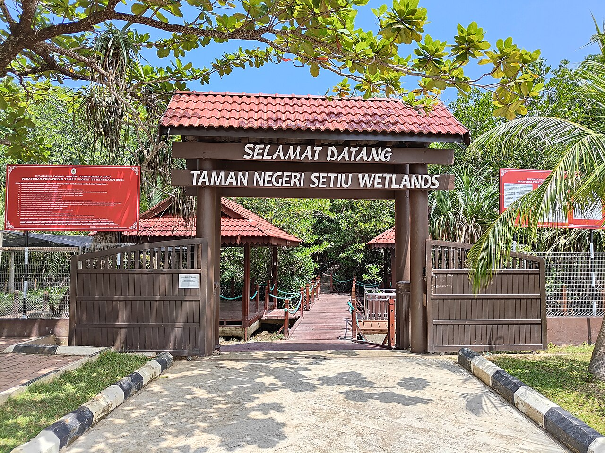
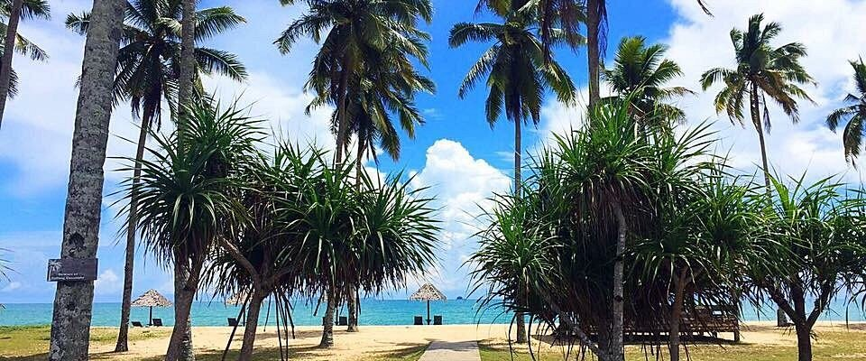
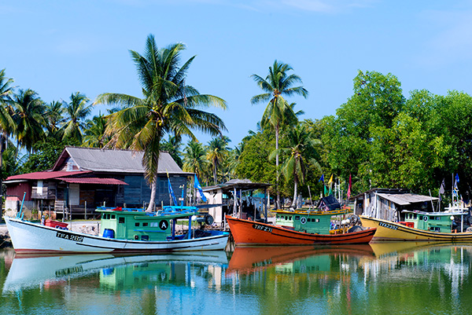
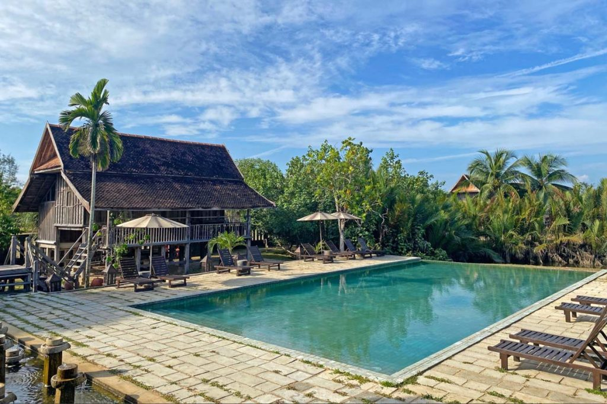

| Activity & Location | Category | What to Expect |
|---|---|---|
|

Visit Setiu Wetlands
Kampung Penarik
|
Nature & Eco | Discover Malaysia’s largest wetland ecosystem with mangroves and rich wildlife. |
|

Relax at Pantai Penarik
Beachfront
|
Beach | A peaceful beach famous for golden sands and fresh coconut drinks. |
|

Setiu River Cruise
Sungai Setiu
|
Adventure | Take a scenic boat ride through wetlands, spotting birds and enjoying sunsets. |
|

Terrapuri Heritage Village
Kg. Mangkuk
|
Culture | Experience traditional Malay architecture in this unique heritage resort. |

Try Local Seafood
Celup Tepung Stalls
|
Gastronomy | Famous for fresh grilled fish, prawns, and the iconic keropok lekor. |

Visit Turtle Hatchery
Mangkuk Conservation
|
Conservation | Learn about conservation efforts and witness baby turtles being protected. |